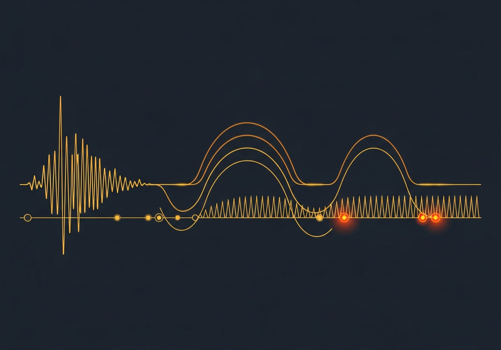

Robust AI for Vision, Language, and Signals

The pragmatic test for perception is not benchmark accuracy but operational reliability: does the system still work when inputs are degraded, geometry is extreme, or language is noisy and ambiguous? This direction studies inference across vision, language, voice, and physical signals as they actually arrive in the field.

Vision AI is typically trained and tested on clean, well-framed images. In deployment, cameras capture things at awkward angles, in bad lighting, from unexpected distances. The question we keep returning to is how a system knows when what it sees is good enough to act on.
One line of work asks this about surveillance cameras: a license plate photographed at an extreme angle may be geometrically unrecoverable, so instead of attempting recognition and failing, we first map where recovery is even feasible (2026). A related question arises with body-worn cameras used in law enforcement: footage from multiple officers at the same incident is fragmented, shaky, and out of sync. Stitching these streams into a coherent panoramic account requires robust scene understanding despite all the noise (2025). Earlier work on robust motion compensation for forensic analysis of egocentric video (2018) tackled the same challenge: making shaky first-person footage usable for investigation by compensating for unavoidable camera movement. Ongoing work with Samsung on detection and localization of image quality artifacts addresses the prerequisite question: before trusting an image, can you identify exactly where and how it has degraded?
Language AI is usually tested on well-formed, complete text. Real-world language is messier: people leave things unsaid, refer to people and places without naming them, ask questions indirectly, and express concerns through the topics they raise rather than through direct statements.
One ongoing project, Recognizing Entities from Contextual Cues, asks whether a model can identify who someone is talking about in a personal story without ever seeing that person named, piecing together identity from details scattered across a narrative. Another, Evidence Matrix Reasoning, tackles structured analytical thinking: when multiple pieces of information point in different directions, how do you weigh them against competing explanations rather than following intuition?
Beyond identifying things, language AI needs to understand what people actually need. The diagnostic questioning benchmark (2026) studies whether a model can conduct a conversation the way a skilled clinician would: asking the right questions in the right order rather than jumping to conclusions. Work on explainable semantic text relations (2025) asks whether two documents agree or contradict each other and, crucially, why. And sometimes what people search for reveals more than what they say: patterns in online health queries (2025) can signal distress long before anyone speaks about it directly.

Voice and audio carry information that text strips away: urgency, hesitation, the sounds people make when words fail them. This thread focuses on settings where the spoken or audio signal is primary and where misreading it has real consequences.
SeaAlert (2026) extracts the critical information a rescue coordinator needs from maritime distress calls: communications that are brief, noisy, emotionally charged, and often incomplete. What needs to be captured (location, vessel type, number of people aboard) must be extracted reliably even when the caller is panicked and the connection is poor. Interjection classification (2025) works at the other end of the spectrum: the non-verbal sounds people make (hesitations, affirmations, expressions of surprise) carry emotional and intentional meaning that standard speech processing ignores. A 2018 patent on methods and systems for providing a response to a public-safety audio query addressed the challenge of giving accurate, fast answers to voice queries in emergency and law enforcement contexts, where both precision and speed are critical.

Physical and sensor signals are rarely clean: machinery vibrates irregularly, sonar echoes scatter in unpredictable environments, timing measurements get corrupted by outliers. This thread asks how AI can extract reliable information from the kind of noisy, structured time-series data that sensors produce in the real world.
Work on early detection of engine anomalies for vehicle health management (2022) builds models that catch early warning signs of mechanical failure before they surface as visible problems, with the goal of acting on a weak signal rather than waiting for a breakdown. A 2022 patent on physical model-based machine learning formalizes this idea: incorporating physical knowledge about how a system behaves into the learning process so the model doesn't have to discover basic physics from scratch. Estimating the precise timing of a signal when measurements are corrupted by outliers is a classic hard problem; a 2014 study on time-of-flight estimation under outlier conditions developed a machine learning approach that remains robust even when a significant fraction of the measurements are wrong. Earlier work on biosonar-inspired source localization (2011) drew on how bats navigate in cluttered, low signal-to-noise environments to develop localization methods that work where conventional approaches break down.